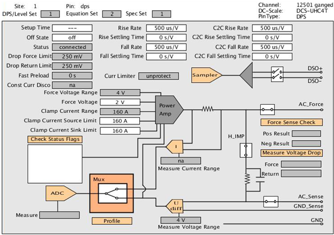

UHC4T hardware overview
The DC Scale UHC4T is a device power supply card for ultra high currents. It has four channels per card, which provide a maximum current of 40 A each (160 A per card) in high-power mode; in precision mode the maximum current capability is 1.5 A per channel.
A high-speed sampler (digitizer) on each channel allows differential voltage measurements and waveform capturing. The high-speed sampler has its own signal pogo pins.
Example
UHC4T hardware view
Only the UHC4T supports the Curr Limiter protection option. Therefore, only the DCS-UHC4T hardware view shows this option and the Equation Set and Spec Set fields.

The hardware views are interactive.
The Profile field for example, allows you to measure and display current and voltage waveforms during pattern execution in the Hardware perspective. For details see Profiling of DC Scale cards with Hardware view.
The underlying sequences also generate sample test method code for the executed measurement in the Sample Code view. You can directly copy and paste the code from the view into your test method program. For details see Sample Code view.
Functional changes
- Introduced in SmarTest 6.5.0
- SmarTest 7.3.2: Support of UHC4T
- SmarTest 7.3.2: Measure Voltage Drop and Sampler fields of UHC4 and UHC4T generate sample test method code